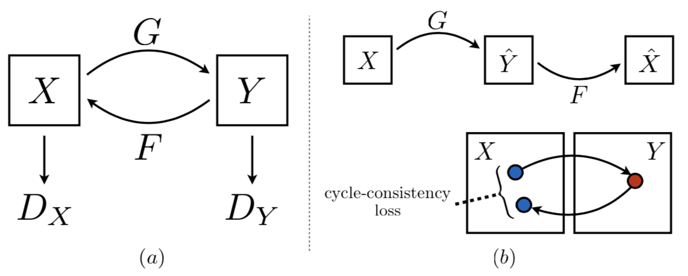
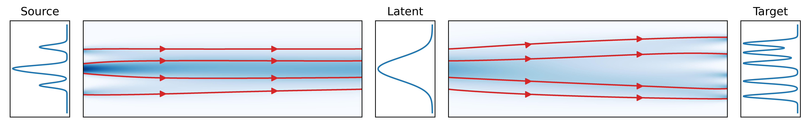
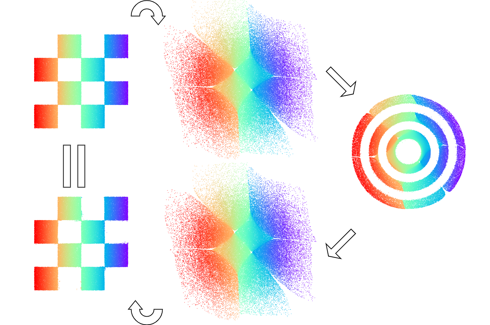
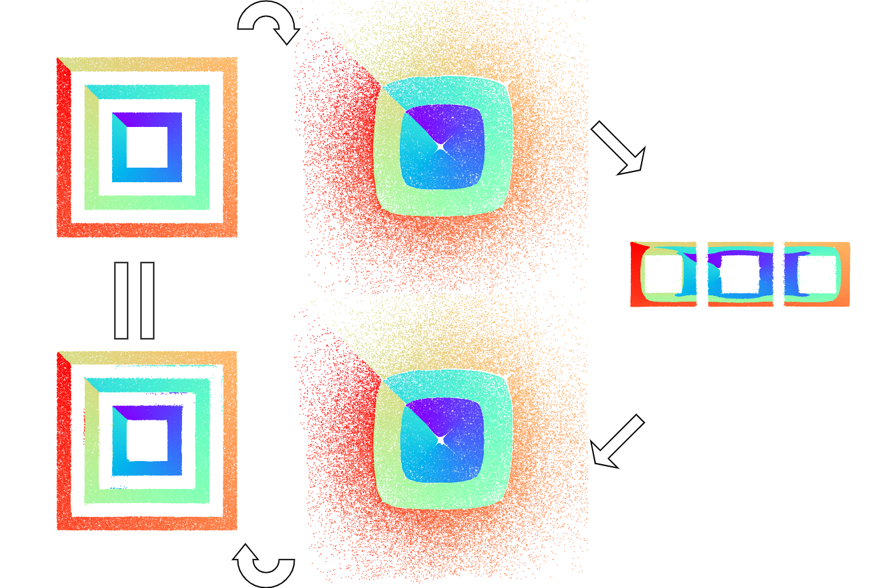
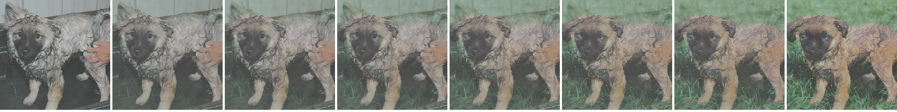
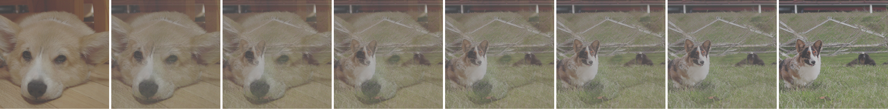

Dual Diffusion Implicit Bridges for Image-to-Image Translation
Xuan Su Jiaming Song Chenlin Meng Stefano Ermon
Stanford University
In ICLR 2023
Paper | GitHub | Colab
DDIBs are an image-to-image translation method, based on probability flow ordinary differential equations (PF ODEs) of generative diffusion models. DDIBs enable independent model training, guarantee exact cycle-consistent translation, and produce impressive results on high-resolution image datasets.
{kind=link}
Abstract
Common image-to-image translation methods rely on joint training over data from both source and target domains. The training process requires concurrent access to both datasets, which hinders data separation and privacy protection; and existing models cannot be easily adapted to translation of new domain pairs. We present Dual Diffusion Implicit Bridges (DDIBs), an image translation method based on diffusion models, that circumvents training on domain pairs. Image translation with DDIBs relies on two diffusion models trained independently on each domain, and is a two-step process: DDIBs first obtain latent encodings for source images with the source diffusion model, and then decode such encodings using the target model to construct target images. Both steps are defined via ordinary differential equations (ODEs), thus the process is cycle consistent only up to discretization errors of the ODE solvers. Theoretically, we interpret DDIBs as concatenation of source to latent, and latent to target Schrödinger Bridges, a form of entropy-regularized optimal transport, to explain the efficacy of the method. Experimentally, we apply DDIBs on synthetic and high-resolution image datasets, to demonstrate their utility in a wide variety of translation tasks and their inherent optimal transport properties.
Paper
arXiv 2203.08382, 2022.
Citation
Xuan Su, Jiaming Song, Chenlin Meng and Stefano Ermon. "Dual Diffusion Implicit Bridges for Image-to-Image Translation". In International Conference on Learning Representations (ICLR) 2023.
Bibtex
Problems with GANs and normalizing flows
|
Common image translation methods are based on generative adversarial networks (GANs) and normalizing flows. They learn to translate images by optimizing a loss that requires concurrent access to both the source and target datasets. What are potential problems of this training approach? |
|  |
{kind=link}
DDIBs flow through the PF ODEs
|
DDIBs solve both problems! DDIBs rely on diffusion models trained independently on the two domains. In detail, DDIBs rely on so-called probability flow ordinary differential equations (PF ODEs), that are a specific, deterministic way of navigating the diffusion process. While there are many paths to generate samples from the latent space, defined via stochastic differential equations; among them, there is one, unique ODE that shares the same marginal densities across time as the SDEs. In graphical terms, the ODEs are the red trajectories below. The DDIBs translation process is equivalent to flowing from the source space, to the latent space, and then to the target, via the red lines / bridges. |
|  |
{kind=link}
DDIBs guarantee exact cycle consistency
|
A desirable property of image translation methods is the cycle consistency property: translating an image from the source to the target domain, and then back to the source domain, recovers the original image. For DDIBs, if you take a closer look at the translation processes (the red lines) above, you'll find that -- perhaps unsurprisingly -- they guarantee cycle consistency, by virtue of being ODEs! Indeed, if we were to travel through the red lines, from left to right and then right to left, across the three spaces, we are certain to arrive at the original positions. Exact cycle consistency of DDIBs is empirically validated by 2D synthetic translation experiments, shown in the following figures. |
|   |
{kind=link}
{kind=link}
DDIBs are intrinsically optimal transport bridges
|
How to interpret the DDIBs translation process? We find that it is closely related to optimal transport: seeking the cost-minimizing method to transport masses from one distribution to another. In particular, DDIBs are two concatenated Schrödinger Bridges. These are a special type of optimal transport with entropy regularization. To build the intuition, let's inspect the following visualizations, with the leftmost column being the source images and the rightmost being the targets. Clearly, DDIBs minimize pixel-wise distances between the image pairs, morphing the edges, hands, and shapes into tree branches and suitable parts of the dog body, that the diffusion models consider appropriate, and are closest in distances to the original shapes. |
|
  |
{kind=link}
{kind=link}
DDIBs generate impressive image translation results!
|
Below, we showcase various image translation pairs from the ImageNet validation set. Enjoy! |
 |